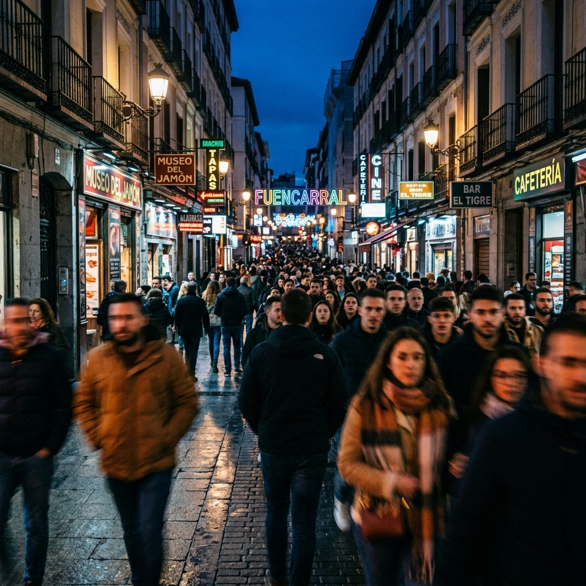
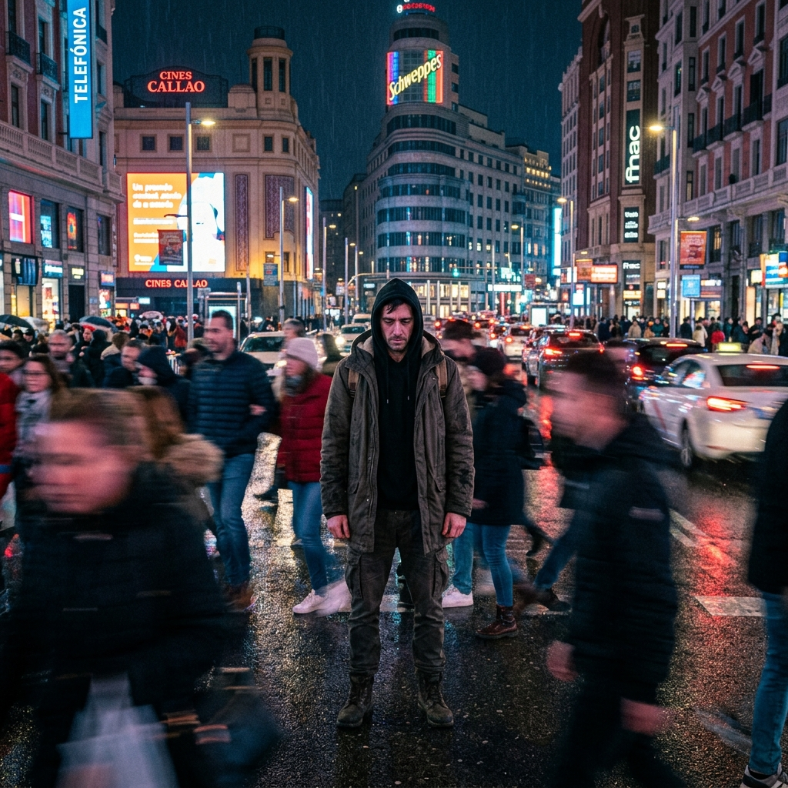

Hoja de Ruta: Rodaje Videoclips
Documento maestro para la grabación de las 3 piezas audiovisuales.
Equipo Técnico: iPhone (Modo Cine) + Trípode de apoyo/GorillaPod.
Estilo de Producción: Guerrilla Filmmaking urbano, uso de luz natural y neones.
1. No Queda Nada ⚡ PRIORIDAD ABSOLUTA
Concepto General: P.O.V (Cámara Subjetiva) combinado con "La Estatua" (Aislamiento en medio del caos). El guion está adaptado para dirección general de actores.
Letra Oficial
Guion Técnico y Acción (Refactorizado)
Bloque 1: Introspección (P.O.V)
- Cámara Subjetiva (Multitud): El operador avanza rápido por Calle Preciados a contraflujo de la gente. Se simulan roces y choques para acentuar "la vida me empuja". (Grabar a 60fps para ralentizar).

- Reflejo en Metro: La cámara mira el reflejo del actor en el cristal mojado de un vagón. Un tren cruza veloz por el andén opuesto borrando la imagen por un instante.

- Cielo y Soledad: Toma subjetiva mirando al atardecer en el Cerro del Tío Pío o Madrid Río. Horizonte inmenso.
Bloque 2: Contraste "La Estatua"
- Estatua (Callao): El actor permanece 100% inmóvil (sin pestañear, expresión muerta) en Gran Vía. Vestuario clave: Abrigo largo para que el viento lo mueva mientras él está congelado.

- Detalle: Manos sacando el móvil o ajustando auriculares. Fondo desenfocado.
- Estatua (De Espaldas): Actor inmóvil en el cruce de Gran Vía con Alcalá. Los transeúntes le esquivan como un río humano (Motion Blur en post-producción).
Bloque 3: Explosión Pop / Neones
- Estatua Iluminada: Frente al luminoso de Schweppes. Un asistente fuera de cámara ilumina sutilmente el rostro del actor con la linterna de un móvil (difuminada) para separarlo del fondo.
- Rack Focus: Perfil del actor. El foco cambia drásticamente de la cara a las luces de la ciudad de fondo.

- Cierre: La mano del actor intenta tapar la lente. Corte a la calle vacía.
2. Bajo Un Mismo Cielo
Concepto General: Distancia y conexión. El contraste entre la soledad de la ciudad y la inmensidad del cielo que nos une. Tonos cálidos (Golden Hour) contrastando con la frialdad urbana.
Lluvia de Ideas: Letra (Concepto)
Ideas para Videoclip (Tomas y Dirección)
- La Búsqueda (Cenital): Tomas del actor caminando por calles estrechas de Madrid mirando hacia arriba. Ángulos contrapicados mostrando el cielo entre los edificios.
- El Atardecer (Parque del Oeste): Grabación durante la Golden Hour. Siluetas a contraluz con el cielo anaranjado/rojizo de fondo. Transmite la idea de "el mismo cielo".
- Pantalla Dividida (Efecto en Edición): Mostrar el cielo de día y el cielo de noche al mismo tiempo, o dos paisajes distintos unidos por la línea del horizonte.
- Detalles: Planos muy cercanos de los ojos reflejando la luz del atardecer, o la mano intentando alcanzar las nubes.
3. En Los Bajos de Argüelles [ELECTRO-FUNK]
History (Sinopsis Breve): Un viaje de redención en la noche madrileña. El protagonista llega a los fríos y oscuros bajos de Argüelles buscando olvidar sus fantasmas en la soledad de una botella. Al cruzar el umbral del bar 'Madrid Madrid', el frío exterior se transforma en una calidez abrumadora. En una barra vacía llena de ecos del pasado, bebe su última copa, se despoja de su antigua sombra y sale a la calle renacido, listo para enfrentar la vida de nuevo.
Letra y Minutaje de Rodaje (Shot by Shot)
[00:00 - 00:30] INTRO: La Llegada (El Frío)
Audio: Viento, pasos solitarios. Entra bajo funky pesado.
Visual (Blanco y Negro / Frío): Tomas de puentes, barandas y pasillos oscuros. El cantante camina con la botella. Luz colonial indirecta.
[00:30 - 00:50] VERSO 1: El Umbral
Con una botella y la mente a la mitad
Luces de neón que me esquivan al pasar
Buscando en el fondo a ver si puedo olvidar
Visual: Plano de espaldas, luces de coches desenfocadas. Se detiene frente a la puerta del bar.
[00:50 - 01:10] PRE-CORO: La Transición
Donde la mentira siempre suena más real
Audio: Punteo de guitarra funky inicial.
Visual: La mano toca el picaporte. Abre la puerta. GOLPE DE COLOR: Transición drástica a luz Naranja y Dorada intensa.
[01:10 - 01:40] CORO: La Barra (El Refugio)
Un bar lleno de vasos donde nadie me puede ver
El 'Madrid Madrid' me sirve la última vez
Brindando con fantasmas que no me dejan caer
Visual (Interior Cálido): El cantante ebrio en la barra. Tomas de cientos de vasos vacíos pero el bar está completamente solo para él.
[01:40 - 02:10] VERSO 2: La Embriaguez
No sé de dónde vengo, pero sé a dónde voy
Dejo mi sombra clavada en el taburete
Suelto la cuerda para que el viento me suelte
Visual: Cámara inestable. Reflejo en la botella. Plano detalle de los pies bajando de la silla. Se pone la chaqueta.
[02:10 - 02:40] PUENTE MUSICAL: El Solo
Audio: Solo de guitarra funk frenético.
Visual: Tira la botella vacía. Camina decidido hacia la salida. La puerta se abre desde dentro.
[02:40 - 03:20] CORO FINAL: El Renacer
Un bar lleno de vasos, pero yo no voy a volver
El 'Madrid Madrid' se queda con el ayer
Salgo a la calle listo para renacer
Visual (Exterior Vivo): El mundo vuelve a tener color brillante. Camina con chulería y seguridad, a ritmo del beat. Mirada segura hacia la cámara.
[03:20 - 03:40] OUTRO: Fade Out
Visual: Se aleja de espaldas por la calle Princesa. Fin.
Cronograma Logístico de Grabación (Shooting Schedule)
Estrategia: Grabar por bloques de iluminación y disponibilidad del local, no por orden cronológico de la canción.
-
FASE 1: 18:00 - 20:00
Exteriores Argüelles (Luz Natural / Atardecer)
Tomas del inicio de la canción (El Frío/Blanco y Negro). Caminar por pasillos, puentes, fachadas coloniales con la botella. Es vital hacerlas antes de perder la luz natural. -
FASE 2: 20:00 - Cierre
Bar 'Madrid Madrid' (Con Público / Transición)
Grabar la toma de apertura de puerta (El Umbral). Tomas recurso del bar funcionando con algo de gente (para generar el contraste posterior). Tomas de embriaguez en la barra mientras aún hay ambiente. -
FASE 3: Cierre del Bar
El Bar Vacío y El Renacer (Introspección)
El momento clave: el bar acaba de cerrar. Está lleno de copas sucias pero no hay nadie más. Aquí se graban los planos de máxima soledad cantando a cámara. Finalmente, la toma saliendo del bar ("listo para renacer") hacia la calle oscura.